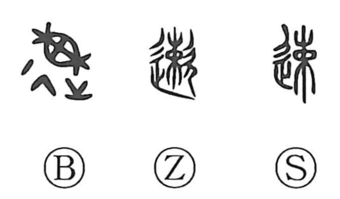

速

Kun: hayai, hayameru, hayamaru, sumiyaka | On: soku
fast ・ quick ・ speedy ・ to hasten
Explanation
A phono-semantic character, 速 takes 束 (soku) as its phonetic, the form of bundling and tying brushwood; some archaic forms even show 敕 as a related phonetic. Shirakawa links its sense to the vigorous, rapid breathing that accompanies the act of bundling, from which the idea of speed naturally arises, yielding meanings like fast and swift. In ritual language, it could also mean to invite promptly—速く招く—since bundles of brushwood (束薪, sokushin) were offered to the deities in worship.